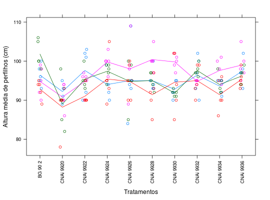

Dados de um ensaio com dez genótipos, quatro blocos e cinco amostras por parcela, tomadas ao acaso, das alturas dos perfilhos, medidos em cm.
Um data.frame com 200 observações e 4 variáveis
genoblocoamostraaltZIMMERMANN (2004), Tabela 4.11, pág. 79.
library(lattice) data(ZimmermannTb4.11)#> Warning: data set ‘ZimmermannTb4.11’ not foundstr(ZimmermannTb4.11)#> 'data.frame': 200 obs. of 4 variables: #> $ geno : Factor w/ 11 levels "BG 90 2","CNAi 9920",..: 1 2 3 4 5 6 7 8 9 10 ... #> $ bloco : Factor w/ 5 levels "1","2","3","4",..: 1 1 1 1 1 1 1 1 1 1 ... #> $ amostra: int 1 1 1 1 1 1 1 1 1 1 ... #> $ alt : int 93 95 90 90 84 94 95 90 92 102 ...xyplot(alt ~ geno, groups = bloco, data = ZimmermannTb4.11, type = c("p", "a"), jitter.x = TRUE, xlab = "Tratamentos", ylab = "Altura média de perfilhos (cm)", scales=list(x=list(rot=90)))aggregate(alt ~ geno, data = ZimmermannTb4.11, FUN = function(x) { c(mean = mean(x), var = var(x)) })#> geno alt.mean alt.var #> 1 BG 90 2 96.450000 20.155263 #> 2 CNAi 9920 90.050000 20.997368 #> 3 CNAi 9922 94.700000 18.010526 #> 4 CNAi 9924 96.650000 16.976316 #> 5 CNAi 9926 95.650000 42.239474 #> 6 CNAi 9928 95.450000 19.418421 #> 7 CNAi 9930 94.750000 23.671053 #> 8 CNAi 9932 95.950000 10.260526 #> 9 CNAi 9934 94.150000 12.871053 #> 10 CNAi 9936 97.000000 9.263158